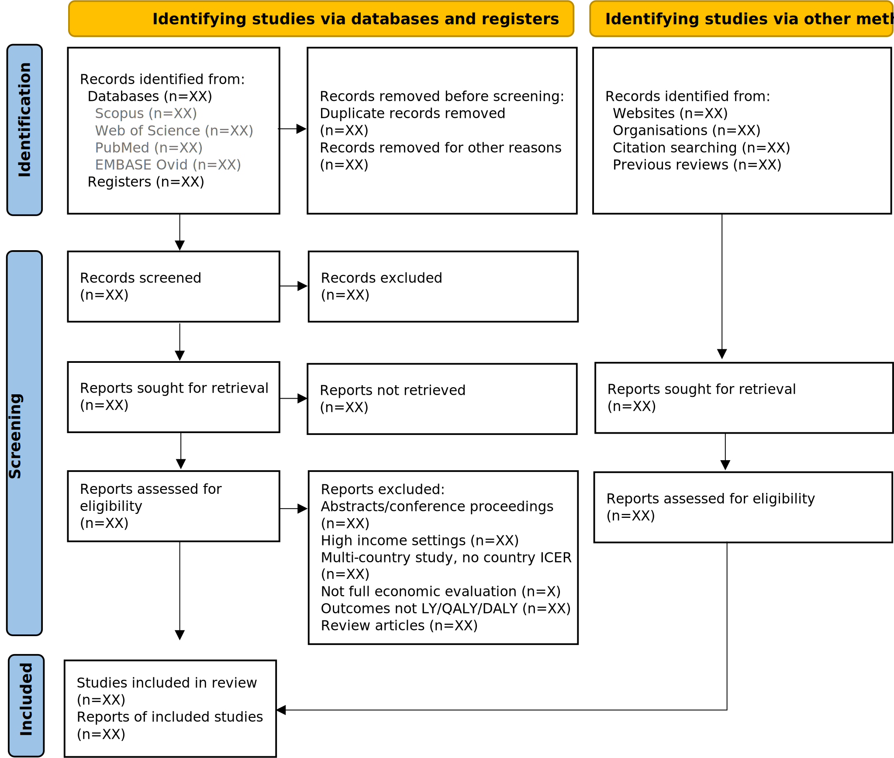
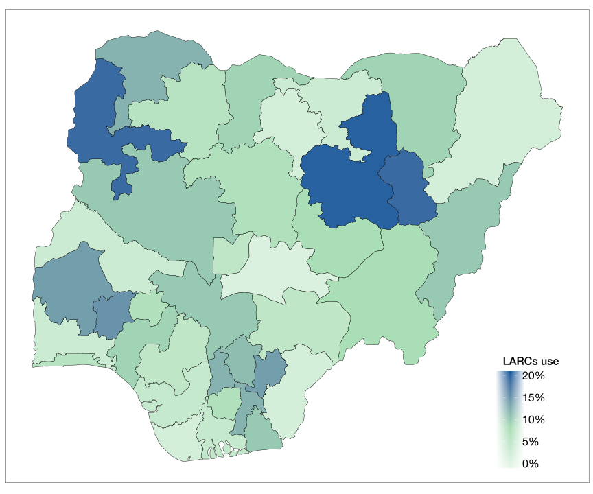

Use of Long-Acting Reversible Contraceptives in Nigeria: A Scoping Review
Working Paper
Universal provision of iron supplements or iron-containing multiple micronutrients powders (MNPs) are widely used to prevent anemia in young children in low- and middle-income countries. The Benefits and Risks of Iron Interventions in Children (BRISC) trial compared iron supplements and MNPs with placebo in children under 2 years in rural Bangladesh.
Universal provision of iron supplements or iron-containing multiple micronutrients powders (MNPs) are widely used to prevent anemia in young children in low- and middle-income countries. The Benefits and Risks of Iron Interventions in Children (BRISC) trial compared iron supplements and MNPs with placebo in children under 2 years in rural Bangladesh.
Universal provision of iron supplements or iron-containing multiple micronutrients powders (MNPs) are widely used to prevent anemia in young children in low- and middle-income countries. The Benefits and Risks of Iron Interventions in Children (BRISC) trial compared iron supplements and MNPs with placebo in children under 2 years in rural Bangladesh.
Universal provision of iron supplements or iron-containing multiple micronutrients powders (MNPs) are widely used to prevent anemia in young children in low- and middle-income countries. The Benefits and Risks of Iron Interventions in Children (BRISC) trial compared iron supplements and MNPs with placebo in children under 2 years in rural Bangladesh.
1 Background
Unplanned pregnancies and births are becoming prevalent in Nigeria (Sedgh et al. 2006). In 2012, roughly one-quarter of all pregnancies among women aged 15–49 was unintended, ranging between 16% in the North West region and 38% in the South South Bankole et al. (2015). The Nigeria Demographic and Health Survey (NDHS) 2018 11% of all births in the five years preceding the survey were unintended (National Population Commission and ICF International 2019). Although the proportion of unintended births is among the lowest in sub-Saharan Africa (Ameyaw et al. 2019), the absolute numbers are among the highest because of Nigeria’s population size. Studies suggest unplanned pregnancy and childbearing can reduce mother’ educational attainment and earning potential (Musick et al. 2009; Psaki et al. 2019). Nigerian women often turn to abortion to avoid unwanted births from unintended pregnancies (Sedgh et al. 2006).
Use of highly effective contraception can reduce the rates of unintended pregnancy rates and resulting unsafe abortions. Long-acting reversible contraceptive (LARC) methods available in Nigeria include intrauterine devices (IUDs) and the etonogestrel (ENG) subdermal implant. These methods are one of the most effective contraception methods given they are asociated with low failure rates, are durable, have relatively milder side effects, and may prevent some cancers (Bahamondes et al. 2020). Irrespective of their associated advantages, LARCs are still underutilized by Nigerian women as compared to other short-acting reversible contraceptives (National Population Commission and ICF International 2019). Studies in other African countries also documented deep-seated resistance to the use of modern contraceptives (Rutenberg and Watkins 1997).
Few studies have examined trends in access to and utilization of contraceptives in Nigeria (Eke and Alabi-Isama 2011; Benova et al. 2017; McCurdy, Jiang, and Schnatz 2018; Adedini, Omisakin, and Somefun 2019; Bolarinwa and Olagunju 2020). Ujah and Kirby (2022) examined trends in differential uptake of LARCs between women residing in rural and urban settings in Nigeria. However, there has been no review to summarize the evidence from these different sources. Some of the evidence on use of LARCs exist in the grey literature, policy documents, and large-scale surveys which are often not included in systematic reviews (for example Rouncivell et al. (2021).
This study focuses on reviewing the practice of long-acting reversible contraception by Nigerian women. The aim is to discuss the trends over the years, identify the challenges to uptake of LARCs, provide policy reviews and make recommendations to address these identified barriers to uptake of LARCs by Nigerian women. The need for this review stems from the fact that available evidence has not yet been systematically appraised and condensed on the use of LARCs in Nigeria. Findings from this review will help policy makers and donors design and direct interventions that will increase LARC uptake in Nigeria.
2 Methods
We also adopt reporting guidelines outlined in the Preferred Reporting Items for Systematic Reviews and meta-Analyses extension for scoping reviews (PRISMA-ScR). The review did not include use of primary data from human subjects research, so an ethics approval was not required. We conducted this scoping review using guidance from Arksey and O’Malley’s scoping review framework: 1) identifying the research question; 2) identifying relevant studies; 3) study selection; 4) charting the data; and 5) collating, summarizing, and reporting the results (Arksey and O’Malley, 2005).
2.1 Search strategy
We systematically searched PUBMED and EMBASE, including available data from the Nigerian Demographic Health Surveys (NDHS). The search strategy included general as well as specific terms to capture the different types of LARCs such as contraceptive implants, intrauterine devices, and contraceptive injectables, including their synonyms, abbreviations, acronyms, and common brand names. We incorporated the term “Nigeria”, and the names of all 36 Nigerian States, including the Federal Capital Territory (FCT), into the search strategy to retrieve studies conducted in Nigeria. There were no search restrictions placed on study intervention, comparator, or outcomes. However, appropriate filters were applied to limit the search results to human studies published in English. Each database was approached slightly differently according to its unique search configuration (see Appendix 1).
2.2 Eligibility criteria
We included original studies relating to LARCs, including but not limited to access, use, safety, efficacy, and policy issues.
2.3.1. Outcome: Studies assessing the effect of LARCs on non-pregnancy-related outcomes were excluded. For instance, we screened out papers investigating the impact of LARCs on electrolyte levels.
2.3.2. Study type: Abstract-only articles, reviews, and commentaries.
2.3.3. Region: Studies not conducted in Nigeria.
2.3.4. Language: Studies not published in English
2.3 Study selection
The selection of articles was done in two phases. The initial phase involved a title and abstract screening of final search results after removal of duplicates. The second phase was a full-text assessment of papers retrieved after the initial screening to identify studies that met the eligibility criteria. The two-phased screening was conducted by two reviewers independently. Any disagreements on selected studies were discussed and resolved unanimously.
2.4 Data extraction
3 Results
3.1 Characteristics of studies
The search strategy produced a total of 863 results, including five reports from DHS. After removing duplicates, 651 studies were left. Title and abstract screening retrieved 195 articles, eliminating 456 search results. Following the full-text screening, a total of 130 articles met the eligibility criteria and were included in the review. (Figure 1).

3.2 Knowledge, Awareness and Attitude towards LARCs:
The Knowledge of long-acting reversible contraception was relatively low in comparison with other Sub-Saharan African countries; nevertheless, there have been remarkable improvement. (National Population Commission, and ICF International 2009; National Population Commission and ICF International 2014, 2019). For instance, in 2003, only 27 percent of Nigerian women had heard of IUDs, 57 percent of Injectables and 10 percent of Implants (National Population Commission, and ORC Macro 2004) . Nonetheless, by 2018, 46 percent of women had heard of IUDs, 82 percent of Injectables and 70 percent of Implants (National Population Commission and ICF International 2019).
Awareness of LARCs varied with geographical location, wealth quintile and education levels. Women living in rural, and less literate North East and North West zones were least likely to be informed on any method of long-acting contraception (National Population Commission, and ICF International 2009; National Population Commission and ICF International 2014, 2019). In contrast, women residing in urban Southern regions, (especially South West) were well-educated on the different LARCs available to them . Expectedly, low levels of education and household income led to reduced knowledge and awareness of LARCs (National Population Commission, and ICF International 2009; National Population Commission and ICF International 2014, 2019).
Women obtained information on LARCs from various sources. Primarily, such information were from friends and family (Adinma, Agbai, and Nwosu 1998; Akadri and Odelola 2017; Ameh and Sule 2007; Olusegun, Ololade, and Ireti 2012; Onwuhafua et al. 2005; Onwuzurike and Uzochukwu 2001; Ugboaja et al. 2011). Secondary sources include: radio/television/newspapers/magazines, school lectures/workshops/seminars and health workers (Adinma, Agbai, and Nwosu 1998; Akadri and Odelola 2017; Eke and Alabi-Isama 2011; Monjok et al. 2010; Naghma-E-Rehan, McFarlane, and Sani 1984; Olukoya 1991; Orji, Adegbenro, and Olalekan 2005). This is interesting because first, it indicates the importance of ensuring that non-medical personnel have access to the right information on LARCs since most women are more likely to get their foremost information from informal sources (Olukoya 1991). Second, it also suggests that organizing community-directed outreaches centered on raising awareness and providing information on LARCs to community members may yield notable results since women are more inclined to learn about LARCs primarily from their immediate community (Olukoya 1991).
In a slightly different pattern, female students sourced their information on LARCs primarily from social media, lectures, seminars, friends, family and secondarily, from health workers (Orji, Adegbenro, and Olalekan 2005; Eke and Alabi-Isama 2011; Olusegun, Ololade, and Ireti 2012). This may probably be due to the academic environment (Olusegun, Ololade, and Ireti 2012). The positive effect of this observation lies in the potential of increased awareness through seminar, workshops and social media adverts (Olusegun, Ololade, and Ireti 2012). Copper T, Depo Provera®, Noristerat® and Implanon® were the most popular brands of LARCs (Olusegun, Ololade, and Ireti 2012) among female students. Female students who had previous induced abortion were significantly more knowledgable about LARCs (Olusegun, Ololade, and Ireti 2012). Their experience of an induced abortion may have triggered the quest to obtain information on more effective and reliable ways of preventing unplanned pregnancies (Olusegun, Ololade, and Ireti 2012). Parents often feel uncomfortable communicating issues bothering sex or in some cases, lack adequate information on LARCs. As a result, young females are more reluctant to get information on LARCs from them (Orji, Adegbenro, and Olalekan 2005).
Different studies had contrasting views on the influence of religion on the knowledge of LARCs. Some studies reported the effect of religious beliefs on the knowledge, awareness and subsequent use of LARCs. For instance, Christian women were reportedly more aware of LARCs than women belonging to other religions in Nigeria (Ayangade, 1984; Egede et al., 2015; Naghma-E-Rehan et al., 1984; Olaleye et al., 2014; Onwuzurike & Uzochukwu, 2001; Orji & Onwudiegwu, 2002; Ugboaja et al., 2011). However, this maybe not be a true reflection nationally, as due cognizance must be taken of a possible confounding of Christianity being the predominant religion in the regions of some of these studies (Adeyemi et al., 2008; Onwuzurike & Uzochukwu, 2001; Ugboaja et al., 2011). In contrast, two studies conducted by Aduloju et al in 2021, and Orji and Odimegwu in 2002 (2021; 2002) stated that religion, did not have any statistical significance (P > 0.05) on the knowledge and awareness of LARCs.
The gap between the Knowledge of LARCs and its actual usage was widen (Adegbola & Okunowo, 2009; Olusegun et al., 2012; Omu & Unuigbe, 1986; Orji & Onwudiegwu, 2002). The implication of this is that awareness alone does not determine the utilization of LARCs by Nigerian women (Adegbola & Okunowo, 2009; Olusegun et al., 2012; Omu & Unuigbe, 1986; Orji & Onwudiegwu, 2002). The common reasons for this gap include: lack of knowledge on provider centers, distance from the source of LARCs, adequate information on the benefits of LARCs, fear of possible side effects, fear of the procedure, husband disapproval, religion and culture (Aduloju et al., 2021; Olusegun et al., 2012; Onwuzurike & Uzochukwu, 2001) Figure 2: Knowledge of LARC methods
Source: NDHS 2003, NDHS 2008, NDHS 2013 & NDHS 2018
The acceptance and use of LARCs was largely dependent on the attitude of women (Aduloju et al., 2021). Women’s attitude (positive or negative) towards LARCs was primarily determined by their level of education and number of surviving children (especially sons). Improvement in health, maintenance of a smaller family size and the fact that it made life more comfortable steered a positive attitude in women which made them four times more likely to use LARCs (Aduloju et al., 2021; Egede et al., 2015). Some women frowned at LARCs because they viewed regulating their fertility as an unhealthy immoral behavior which is an affront to the God-given blessing of fertility (Renne, 1997; Udigwe et al., 2002; Ukaegbu, 1977)
Another contributing factor to the attitude of the women to LARCs was the viewpoint of health workers. For instance, although family planning and health workers may promote the use of LARCs like IUDs, some do so with reservations, advising women not to use IUDs if they have not had children before (Renne, 1997).
3.3 Access to LARCs
Nigerian women seek long-acting reversible contraception from both public and private sectors (Federal Ministry of Health, 2014; National Population Commission & ICF International, 2019; National Population Commission & International, 2009, 2014; National Population Commission & Macro, 2004). Government hospitals, government health centers and family planning clinics were major public health outlets for LARCs (Egede et al., 2015; National Population Commission & ICF International, 2019; National Population Commission & International, 2009, 2014; National Population Commission & Macro, 2004). While family/private hospital/clinics and private pharmacies, popularly called “chemist shops” were popular private sector outlets (Ayangade, 1984; National Population Commission & ICF International, 2019; National Population Commission & International, 2009, 2014; National Population Commission & Macro, 2004). LARCs such as IUDs, Implants, and Injectables were primarily sourced from the public sector because they require trained service delivery (Federal Ministry of Health, 2014; National Population Commission & ICF International, 2019; National Population Commission & International, 2009, 2014; National Population Commission & Macro, 2004).
The ease of accessing LARCs, proximity of service providers and level of confidentiality offered by service providers were key considerations in choosing where to get LARCs, given that some women used LARCs without their husband’s knowledge or approval (Egede et al., 2015)(Onwujekwe et al., 2013). Patent medicine dealers and pharmacy shops being the most proximate and accessible providers were the major sources of LARCs that do not require trained medical services.
Religion and denomination also influenced the source of purchase. Reported that while Roman Catholics purchase LARCs chiefly from patent medicine shops, the majority of other Christians procure theirs from general hospitals (Oye-Adeniran et al., 2005). The patronage of patent medicine shops by Catholics maybe associated with a religious objection to the use of modern contraceptive methods and the desire to keep their purchase of LARCs “confidential.” Similarly, Muslims patronized patent medicine shops more frequently, also due to reported high disapproval by of contraceptives (Egede et al., 2015; Onwujekwe et al., 2013; Oye-Adeniran et al., 2005).
Figure 3: Source of LARCs (Public Sector)
Source: NDHS 2018
Figure 4: Source of LARCs (Private Sector)
Source: NDHS, 2018
There were geographical differences in accessing LARCs. Urban dwellers procured LARCs from government hospitals, private clinics, and pharmacy shops with qualified pharmacists (Onwujekwe et al., 2013). In contrast, rural dwellers got theirs mostly from patent medicine dealers (Onwujekwe et al., 2013), probably due to the proximity of these patent medicine shops and high cost transportation from rural to urban regions where bigger health facilities are located. This trend of the patent medicine shops being the most popular source of LARCs in rural regions is worrisome, since most of the patent medicine dealers are untrained (Monjok et al., 2010) .
Most women held the opinion that LARCs were not easily accessible (Federal Ministry of Health, 2013). However, the proportion of women who thought that LARCs were not readily accessible decreased consistently with increase in educational status and residence in urban areas (Federal Ministry of Health, 2013). Hence, one can infer that with exposure to education, women become well informed on the various means of accessing LARCs and are financially capable of purchasing them.
Although a good number of Nigerian women desire them (The RESPOND Project, 2013), there are certain barriers to accessing the wide variety of LARCs available. First, is the reduced availability of LARCs in certain family planning clinics (Oye-Adeniran et al., 2005; The RESPOND Project, 2013). The RESPOND project, reported feedback by one of the service providers where she buttressed this challenge:
“..Sometimes we run out of stock but not too frequently; when that happens, I will go into the market to get some so that we will have the methods, because we are mindful of our clients’ appointment dates…. I used to tell the community that the IUD is now costly because we used to get it from black market in Makurdi…” (The RESPOND Project, 2013)
—Service provider, Adikpo, Benue State, Nigeria
The lack of basic supplies and equipment most often lead providers to charge unauthorized fees that some women cannot afford or request clients to purchase LARC supplies from the black market notorious for its uncertain quality (The RESPOND Project, 2013). Second, some family planning clinics are in a poor state of repair, and many had either no or only intermittent electricity all of which discourages women (The RESPOND Project, 2013).
The third barrier to accessing LARCs is the shortage of skilled providers to deliver LARC services (Federal Ministry of Health, 2014). For instance, although the policy that permits Community Health Extension Workers (CHEWs) to deliver Injectables was approved in 2012, only few CHEWs have received formal training on how to deliver the method properly (Federal Ministry of Health, 2014). Regarding other LARCs, Implants were introduced on a larger scale in the public sector only in 2006, and it is plausible that many providers who received training are no longer practicing in the public system (Federal Ministry of Health, 2014). Many experienced Family Planning (FP) providers cited the lack of continuing education and training as the reason for the rather reduced skill set in administering LARCs, pointing to the 1980s as the last time that large-scale FP training efforts were in place (Federal Ministry of Health, 2014).
3.4 Utilization/Geopolitical Prevalence
The contraceptive prevalence (CPR) of LARCs remain low relative to other short-acting contraceptives. Nevertheless, the CPR of LARCs increased steadily from 2.7 percent in 2003 to 7.4 percent in 2018 among married women using contraceptives (National Population Commission & ICF International, 2019; National Population Commission & Macro, 2004). Nationally, about 14.8 percent of women currently using any method of contraception used LARCs (Bolarinwa & Olagunju, 2020). The prevalence LARCs was highest among women aged 35 years and above and lowest among those aged 15-24 (National Population Commission & ICF International, 2019; National Population Commission & International, 2009, 2014; National Population Commission & Macro, 2004; Ugboaja et al., 2011). Injectables and IUDs were the most frequently used LARC (Adegbola & Okunowo, 2009; National Population Commission & ICF International, 2019; National Population Commission & International, 2009, 2014; National Population Commission & Macro, 2004; Okunlola et al., 2006, 2009; Onwuhafua et al., 2005; Ozumba & Ibekwe, 2001; Udigwe et al., 2002; Ugboaja et al., 2011)
Use of LARCs varied with residence, region, level of education, number of living children, and economic status of the household (National Population Commission & ICF International, 2019; National Population Commission & International, 2009, 2014; National Population Commission & Macro, 2004). Married women residing in urban areas were more likely to use LARCs than their rural counterparts (National Population Commission & ICF International, 2019; National Population Commission & International, 2009, 2014; National Population Commission & Macro, 2004; Onwuhafua et al., 2005). The limited use of LARCs in rural areas persists for various reasons ranging from unavailability of the LARC methods to lack of proficiency in administering LARCs by rural care providers (Onwuhafua et al., 2005). The South-West zone had the highest proportion of women using LARCs, followed by the South-South zone (Federal Ministry of Health, 2013; National Population Commission & ICF International, 2019; National Population Commission & International, 2009, 2014; National Population Commission & Macro, 2004). The lowest proportion of married women using any LARC method were in the North-East (Federal Ministry of Health, 2013; National Population Commission & ICF International, 2019; National Population Commission & International, 2009, 2014; National Population Commission & Macro, 2004). LARC use increased with educational attainment across all geopolitical zones (Adeyemi et al., 2008; Adeyemi & Adekanle, 2012; National Population Commission & ICF International, 2019; National Population Commission & International, 2009, 2014; National Population Commission & Macro, 2004). By wealth quintile, women in the lowest quintile were least likely to use long-acting reversible contraception and women in the highest quintile were most likely to use them (National Population Commission & ICF International, 2019; National Population Commission & International, 2009, 2014; National Population Commission & Macro, 2004).
Use of LARCs was relatively low among singles compared to married women (Ijarotimi et al., 2015; Olaleye et al., 2014; Oye-Adeniran et al., 2005). This may be because single women are less likely to source for contraception openly because of cultural and religious prohibition of premarital sex in Nigeria (Ijarotimi et al., 2015).
The uptake of LARCs increased with parity; women do not begin to use LARCs until they have had at least one child (Aduloju et al., 2021; Ijarotimi et al., 2015; Konje et al., 1998; National Population Commission & ICF International, 2019; National Population Commission & International, 2009, 2014; National Population Commission & Macro, 2004; Udigwe et al., 2002).
An attribute pointing to the reproductive need of women with less than 3 children and the popular consideration of LARC methods as an alternative to the sterilization method (Aduloju et al., 2021; Ijarotimi et al., 2015).
The most common reasons for using any method of long-acting reversible contraception were safety, reversibility, effectiveness, long-term protection, convenience, husband’s approval, understanding of the LARC method, personal choice, the desire to have good maternal health, satisfaction with information given on insertion procedure and services rendered by the healthcare provider recommendation by another woman who had used the method, affordability, approval by religion and duration of the desired LARC (Adinma et al., 1998; Aduloju et al., 2021; Egede et al., 2015; Ojo et al., 2020; ‘Views on Family Planning and Long-Acting and Permanent Methods’, 2013).
Lack of knowledge, not being married, fear of the procedure, dislike of foreign body, inability to access LARCs, husband’s objection, fear of side effects/complications, fear of infertility, need for further counselling, high cost of LARCs, preference for natural methods, lack of knowledge on provider centers, inadequate information on the benefits of LARCs, conflicts with their religious and cultural beliefs were the major reasons given by the women for not using LARCs (Adinma et al., 1998; Aduloju et al., 2021; Egede et al., 2015; Eke & Alabi-Isama, 2011; Federal Ministry of Health, 2013; Ikechebelu et al., 2005; Inyang-Etoh & Abah, 2017; Konje et al., 1998; Naghma-E-Rehan et al., 1984; Ojo et al., 2020; Omu & Unuigbe, 1986; Onwuhafua et al., 2005; Orji & Onwudiegwu, 2002; Udigwe et al., 2002; Ugboaja et al., 2011; Ukaegbu, 1977). In their study, Eke & Alabi-Isama (2011) reported that most adolescent females thought that LARCs should not be used by unmarried women.
Most women thought that negotiating and deciding with their husbands prior the use of any LARC method was necessary (Federal Ministry of Health, 2013; The RESPOND Project, 2013). But in reality, men alone played the dominant role in women’s decision to adopt long-acting reversible contraception and in the choice of method (Federal Ministry of Health, 2013; Omu & Unuigbe, 1986; The RESPOND Project, 2013). The dominant role of men affected the use of LARCs because men generally demonstrated less favorable attitudes toward family planning than women and were less knowledgeable about LARCs (The RESPOND Project, 2013). Hence, a woman’s ability to control her fertility and her choice of long-acting reversible contraception were partly determined by her empowerment status and self-image (National Population Commission & ICF International, 2019; National Population Commission & International, 2009, 2014; National Population Commission & Macro, 2004). A woman who is unable to control her life may be less likely to feel she can make and carry out decisions about her fertility (National Population Commission & ICF International, 2019; National Population Commission & International, 2009, 2014; National Population Commission & Macro, 2004).
Depo Provera® and Noristerat® were the most commonly used brands of Injectables (National Population Commission & International, 2009, 2014). Depo Provera® was largely used by women in the South-East and North-West zones, while Noristerat® was primarily used by women in the North-East (National Population Commission & International, 2009, 2014). Notably, Depo Provera was the brand of choice for women in the lowest, second and fourth wealth quintile, who had either secondary, primary or no education (National Population Commission & International, 2009, 2014). Conversely, the use of Noristerat® increased with educational attainment and wealth status (National Population Commission & International, 2009, 2014).
Overtime, the use of Implants, particularly Implanon® and Jadelle® became popular (National Population Commission & ICF International, 2019; National Population Commission & International, 2009, 2014; National Population Commission & Macro, 2004; Tunau et al., 2019). It even seems that Implants have slowly replaced IUDs which were commonly used earlier (National Population Commission & ICF International, 2019; National Population Commission & International, 2009, 2014; National Population Commission & Macro, 2004; Tunau et al., 2019). Highly educated women preferred Implants and had higher odds of using them the less educated counterparts. The plausible motive for this preference maybe the increased capacity to manage information correctly by educated women and awareness of the associated advantages of using Implants education provides (Ojo et al., 2020). Non-literate women appeared to be suspicious of new methods and therefore shunned the method (Mutihir & Duru, 2008). Specifically, young Nigerian women with desire for future fertility formed significant proportion of Implanon® acceptors (Roberts et al., 2015).
IUDs are quite common and widely used in Nigeria, particularly by older married women aged 35 and above (National Population Commission & ICF International, 2019; National Population Commission & International, 2009, 2014; National Population Commission & Macro, 2004; Oye-Adeniran et al., 2005) but are gradually losing their appeal. They were least commonly used in Northern Nigeria. Religious constraints seem to be the major propeller behind this; Muslim women while not considering family planning as un-Islamic, often view the insertion of an external object into their body to be sacrilegious (Naghma-E-Rehan et al., 1984). Although still used in other regions in Nigeria, IUDs are gradually losing favor in the South-Western region (Ameh & Sule, 2007; National Population Commission & ICF International, 2019; National Population Commission & International, 2009, 2014; National Population Commission & Macro, 2004). The need for their husband’s consent maybe one of the primary reasons for the general decline in the application of IUDs. The thread from the IUDs often give women away when using them without their husband’s consent (F. O. Ezugwu & Anya, 2005). The most common reason for discontinuation was a desire for pregnancy, especially among those younger than 35 years (Oye-Adeniran et al., 2005). Married women were more likely to use IUDs than singles, as most singles opt for other forms of contraception (E. C. Ezugwu et al., 2020).
Nigerian women are most often not aware or have misconceptions on the benefits and side effects of long-acting reversible contraception (Federal Ministry of Health, 2013). Hence, the need to heighten awareness, to enable women make informed decisions while choosing a LARC method. Women who used injectables and IUDs were more informed on the side effects of these methods, what to do if they experienced side effects and other methods of long-acting contraception available to them than women who opted for Implants (National Population Commission & ICF International, 2019; National Population Commission & International, 2009, 2014; National Population Commission & Macro, 2004). LARC users were least likely to receive information about side effects or safety issues from a private medical facility than from a government hospital (National Population Commission & ICF International, 2019; National Population Commission & International, 2009, 2014; National Population Commission & Macro, 2004). The same was true of information on what to do if they experienced side effects. (National Population Commission & ICF International, 2019; National Population Commission & International, 2009, 2014; National Population Commission & Macro, 2004).
Although some women were not current users, they indicated interest in using Injectables and IUDs in the future (Federal Ministry of Health, 2013; The RESPOND Project, 2013). The proportion of Nigerian women who were non-users, but intend to use a modern method of contraception (such as LARCs) in the future was lowest in the North-East. This was the same for uneducated women living in rural areas (Federal Ministry of Health, 2013). Knowledge of this is crucial in order to meet the rising demand for LARCs by Nigerian women. These statistics confirm that demand generation will be a critical component of meeting the national contraceptive prevalence goal (Federal Ministry of Health, 2014).

3.5 Profile of women using LARCs
LARCs were predominantly used by highly educated women aged 25 and above, residing in urban regions and married. Concerning the household wealth-index, women from poor households (lowest and second wealth quintiles) subscribed less to the different LARC methods compared to women from middle and wealthy households (middle, fourth and highest wealth quintiles) (Bolarinwa & Olagunju, 2020; Ijarotimi et al., 2015; National Population Commission & ICF International, 2019; National Population Commission & International, 2009, 2014; National Population Commission & Macro, 2004; Ugboaja et al., 2011). Women aged 25 years and above were more likely to use a LARC method compared to women aged 15–24 years (Bolarinwa & Olagunju, 2020; Ijarotimi et al., 2015; National Population Commission & ICF International, 2019; National Population Commission & International, 2009, 2014; National Population Commission & Macro, 2004; Udigwe et al., 2002; Ugboaja et al., 2011). Additionally, women who had 1–4 children subscribed further to LARC methods as opposed to women with no children (Bolarinwa & Olagunju, 2020) (Bolarinwa & Olagunju, 2020; Ijarotimi et al., 2015; National Population Commission & ICF International, 2019; National Population Commission & International, 2009, 2014; National Population Commission & Macro, 2004; Ugboaja et al., 2011).
3.6 Effectiveness
Generally, LARCs were found to be a highly effective method of birth control, with several studies reporting no accidental pregnancies (Pearl index= 0) (Abasiattai et al., 2010; Abasiattai, A. M. et al., 2008; Adeyemi & Adekanle, 2012; Aisien, 2007; Akadri & Odelola, 2017; Balogun et al., 2014; Enyindah & Kasso, 2011; Ezegwui et al., 2011; Fakeye, 1991; Falase et al., 1989; Farr et al., 1996; Ladipo et al., 1993; Oyediran & Akinla, 1980; Roberts et al., 2015). While there were a few reports of unintended pregnancies, the failure rate was very minimal, ranging from 0.07 percent to 1.5 percent (Adegbola & Ogedengbe, 2008; Chigbu et al., 2010; Enyindah et al., 2012; F. O. Ezugwu & Anya, 2005; Hu et al., 2012; Mutihir et al., 2010; Obi & Anya, 2000; Ojule et al., 2010). Although a relatively high failure rate of 3.7 percent was reported among IUD users in Abia State (Chigbu et al., 2010), unexpected pregnancy was observed in just one out of the 27 IUD users. Larger studies, however, revealed that IUDs, particularly Copper T-380A, were effective in over 99 percent of users (Abasiattai, A. M. et al., 2008; Adegbola & Ogedengbe, 2008; Enyindah & Kasso, 2011; Fakeye, 1991; Farr et al., 1996; Obi & Anya, 2000). Similar high rates were found among users of progesterone-only injectables, notably Depot Medroxyprogesterone acetate (DMPA) (Abasiattai et al., 2010; Adeyemi & Adekanle, 2012; Akadri & Odelola, 2017; Chigbu et al., 2010; F. O. Ezugwu & Anya, 2005; Fakeye, 1991; Falase et al., 1989; Hu et al., 2012) and Norethisterone enanthate (NET-EN), and contraceptive subdermal implants, such as Implanon® (Balogun et al., 2014; Ezegwui et al., 2011; Roberts et al., 2015) Jadelle® (Enyindah & Kasso, 2011) and Norplant® (Aisien, 2007; Ladipo et al., 1993; Mutihir et al., 2010). A study in Jos reported one failure (3.3 percent) among 30 women who requested for and had Implanon® rods removed (Mutihir & Nyango, 2010). However, this failure was due to inadvertent insertion of the implant during pregnancy.
3.6 Safety Profile and Complications
While LARCs were generally reported to be safe, the chief complaints were menstrual abnormalities (Adaji et al., 2005; Adegbola & Ogedengbe, 2008; Adeyemi & Adekanle, 2012; Aisien, 2007; Balogun et al., 2014; Chigbu et al., 2010; Ekabua & Itam, 2007; Enyindah & Kasso, 2011; F. O. Ezugwu & Anya, 2005; Falase et al., 1989; Farr et al., 1996; Hu et al., 2012; Mutihir et al., 2006; Obi & Anya, 2000; Ojule et al., 2010; Okunlola et al., 2009; Roberts et al., 2015). Secondary amenorrhea was the most prevalent menstrual disturbance among women using progesterone-only injectables (Aisien, 2007; Ekabua & Itam, 2007; Enyindah et al., 2012; F. O. Ezugwu & Anya, 2005; Okunlola et al., 2006; Sagay et al., 2008) and reported to a lesser extent by users of IUDs (Abasiattai, A. M. et al., 2008; Enyindah et al., 2012; Okunlola et al., 2009) and subdermal implants (Balogun et al., 2014; Ekabua & Itam, 2007; Roberts et al., 2015). One study in Enugu, however, reported amenorrhea as the main side effect experienced by Jadelle® users (Enyindah & Kasso, 2011). Other menstrual disturbances associated with the use of LARCs include irregular bleeding, heavy/prolonged bleeding, and dysmenorrhea. Also frequently reported complaints were lower abdominal pain (Abasiattai et al., 2010; Abasiattai, A. M. et al., 2008; Aisien, 2007; Chigbu et al., 2010; Enyindah et al., 2012; Falase et al., 1989; Hu et al., 2012; Okunlola et al., 2009) and vaginal discharge. Breast pain was also reported with the use of implants (Aisien, 2007; Balogun et al., 2014). There were also considerable cases of weight gain (Abasiattai et al., 2010; Chigbu et al., 2010; Falase et al., 1989; Hu et al., 2012) and a far lesser proportion of weight loss (Chigbu et al., 2010; Hu et al., 2012) among women using contraceptive injectables. Interestingly, there were a few reports of weight gain in users of IUDs and Implant, with one study in Jos reporting an average weight gain of 2.6kg among users of Copper T-380A (Mutihir et al., 2006). Meanwhile, Sagay et al. suggested that Norplant tends to prolong PR and QRS electrocardiogram intervals (Sagay et al., 2008). Similarly, hypertension was associated with the use of injectables (Akadri & Odelola, 2017; Hu et al., 2012; Ojule et al., 2010), though report. Expulsion and missing IUDs were also reported in a few studies(Abasiattai, A. M. et al., 2008; Enyindah et al., 2012; Obi & Anya, 2000; Okunlola et al., 2009).
3.7 Barriers to use of LARCs
Shortage of skilled providers to deliver available LARC services is a major barrier to the uptake of LARCs. As stated earlier, only few approved CHEWs have actually received formal training on delivering injectables (i.e., providing the necessary counselling, screening for pregnancy, and delivering the actual injection) [29]. In the North, women rely on CHEWs with at least two years of post-secondary school education as the primary point of care (Federal Ministry of Health, 2013). In addition to their primary responsibility in delivering LARCs, these CHEWs often function as the sole staff members of Primary Health Care Centers, providing all the care in the community and sometimes delivering services for which they are not properly trained (Federal Ministry of Health, 2013). As at October 2018, 65 percent of Nigerian health facilities have a LARC-trained service provider (Bietsch et al., 2020). But only 36 percent of these facilities provided LARCs to women at the same period. This shortage maybe because many providers who received training are no longer practicing in the public sector or that commodities, tool and job aids for delivering services are unavailable (Federal Ministry of Health, 2013; Federal Ministry of Health, 2020).
Some studies indicated that many service providers contributed to barriers to uptake by restricting access, based on their personal cultural/social norms or client’s personal characteristics (i.e. age, parity, and marital status) (Camara et al., 2017; Federal Ministry of Health, 2020). A 2017 study which reviewed restrictions to contraceptive access imposed by service providers (nurses/midwives, patent and proprietary medicine vendors, CHEWs and pharmacists), showed that service preferences were given to clients who were married or older than 24yrs (International Planned Parenthood Federation, 2020). Similarly, the performance monitoring for action (PMA) 2020’s Adolescents and Young Adults Health Brief indicated that unmarried individuals might be able to services for male condoms and emergency contraceptives – but are less likely to access same for LARCs (International Planned Parenthood Federation, 2020). As a result, unmarried individuals might choose not to use LARCs or opt for methods that are more likely accessible but less effective (International Planned Parenthood Federation, 2020). The unavailability of adequate youth-friendly Family Planning service points may be the biggest factor in preventing adolescents from accessing LARCs (Federal Ministry of Health, 2020).
Another salient barrier to the uptake of LARCs which has most often been over-looked is the poor integration of family planning services (including LARCs) with maternal and new-born health, childhood immunization, nutrition programmes and prevention of mother-to-child transmission of HIV (PMTCT) services (Federal Ministry of Health, 2020). Although during pregnancy, women may not actively seek FP information or services, but they often engage proactively with the healthcare system during antenatal care, delivery, postnatal care, and first year infant immunizations (Federal Ministry of Health, 2020). These contact points offer valuable and reliable opportunities for healthcare providers to educate the women on LARC services. Some of the challenges of integration of FP with Maternal and Newborn & Child Health (MNCH) include resistance within the separate health programme responsible for FP and Maternal and Child Health services, facility or community-based workers who are not trained or have inadequate staff time to address both MNCH and FP needs (Federal Ministry of Health, 2020).
Increased stock-outs of commodities due to unavailability or poor quality of actual consumption data to determine the true commodity need, delays in approving the supply plan to commence procurement, poorly implemented annual supply plans and irregular last mile distribution mostly due to lack of funding, limits the provision of quality LARC services (Federal Ministry of Health, 2020).
Fear of side effects—real or perceived—is another key barrier hindering the use of LARCs. For example, some women fear that some methods cause excessive bleeding and infertility (Inyang-Etoh & Abah, 2017; The RESPOND Project, 2013; Udigwe et al., 2002). There were common beliefs that if a woman does not give birth to all the children in her womb, she may develop cancer (The RESPOND Project, 2013; Ugboaja et al., 2011). Another commonly held opinion is that a couple should not use any family planning methods early in their childbearing years, to avoid infertility. Some men fear that women become promiscuous when they practice family planning (The RESPOND Project, 2013).
Lack of support from the husband not only hinders initial contraceptive use but may also lead to pre- mature termination of use of a long-acting method (Aduloju et al., 2021; Ikechebelu et al., 2005; Onwuzurike & Uzochukwu, 2001; The RESPOND Project, 2013). To resolve this and achieve their birth-limiting goals, some women use contraceptive methods covertly, although such behavior may result in serious marital disharmony if the husband learns of it (The RESPOND Project, 2013).
Other barriers to the use of LARCs include cultural bias (certain cultures are highly supportive of large family size), myths and misconceptions about LARCs, gender inequity, religious beliefs, fear of infection and reduction/loss of libido (Adinma et al., 1998; Aduloju et al., 2021; Inyang-Etoh & Abah, 2017; Onwuzurike & Uzochukwu, 2001; The RESPOND Project, 2013; Ugboaja et al., 2011; Ukaegbu, 1977).
3.7 Discontinuation
The discontinuation rate varied considerably across the different LARCs types and with the duration of usage. Unsurprisingly, there was an increase in discontinuation rates over time, particularly for injectables which typically require two-monthly or three-monthly administration. Moreover, the rate of discontinuation at 12 months of use was highest among women using DMPA injectables, ranging from 50 percent to 62 percent (Chigbu et al., 2010; Fakeye, 1991; Hu et al., 2012; Ogedengbe et al., 1987). However, in Osogbo a slightly lower rate of 22.4 percent was observed (Adeyemi & Adekanle, 2012). Interestingly, an Enugu study documented a low discontinuation rate (12.8 percent) even at 36 months (Adaji et al., 2005; Adeyemi & Adekanle, 2012; F. O. Ezugwu & Anya, 2005; Falase et al., 1989; Ojule et al., 2010). Compared to injectables, implants and IUDs had better continuity owing to their longer life span. The 12-month discontinuation rate for IUDs was 10%-22% (Adegbola & Ogedengbe, 2008; Fakeye, 1991; Okunlola et al., 2006; Oyediran & Akinla, 1980; van Dierendonck et al., 1992), while those for implants were 1-8 percent for Implanon® (Ezegwui et al., 2011; Mutihir & Duru, 2008)and 5.4-9.8% for Norplant® (Aisien, 2007; Ekabua & Itam, 2007; Fakeye, 1991). Jadelle®, a relatively new contraceptive implant in Nigeria, had no discontinuations among users in Rivers State (Enyindah & Kasso, 2011). Ogedengbe et al. (Ogedengbe et al., 1987), however, observed comparable discontinuation rates between IUDs (45.6%) and Injectables (50.2%). For Norplant®, after 36 months, approximately 11-18% of users had discontinued use (Aisien, 2007; Ekabua & Itam, 2007; Ozumba et al., 1998).
Similar to other contraceptives, LARCs are not without side effects. Side effects/health concerns were the primary reason for discontinuing LARCs. Common side effects like changes in menstrual cycle, irregular spotting of blood through the vagina and amenorrhea have been associated to the use of progestogen-only methods (Okafor, 2018). To reduce the occurrence of side-effects and promote use, LARCs should be selected based on informed decisions. This is an important principle in the delivery of LARCs (National Population Commission & ICF International, 2019; National Population Commission & International, 2009, 2014; National Population Commission & Macro, 2004). Women using LARCs should also be counseled, so they can cope easily with side effects, to avoid dissatisfactions and unnecessary discontinuations of the methods (National Population Commission & ICF International, 2019; National Population Commission & International, 2009, 2014; National Population Commission & Macro, 2004).
The most frequently reported reasons for discontinuing LARCs were the desire for pregnancy (Adegbola & Ogedengbe, 2008; Aisien, 2007; Balogun et al., 2014; Ekabua & Itam, 2007; Enyindah et al., 2012; Mutihir et al., 2010; Mutihir & Nyango, 2010; Ogedengbe et al., 1987; Okunlola et al., 2006; Sagay et al., 2008; van Dierendonck et al., 1992) and menstrual side effects (Adaji et al., 2005; Adeyemi & Adekanle, 2012; Chigbu et al., 2010; Ezegwui et al., 2011; Fakeye, 1991; Falase et al., 1989; Hu et al., 2012; Mutihir & Nyango, 2010; Obi & Anya, 2000; Oyediran & Akinla, 1980; Ozumba et al., 1998). Abnormal menstruation, particularly amenorrhea, was a commonly cited reason by users of contraceptive injectable (Adaji et al., 2005; Adeyemi & Adekanle, 2012; Chigbu et al., 2010; Falase et al., 1989; Hu et al., 2012). Spousal factors such as husband’s objection and husband’s deaths were also linked with discontinuation (F. O. Ezugwu & Anya, 2005). Expulsion of contraceptive devices was also reported among IUD users (Adegbola & Ogedengbe, 2008; Enyindah et al., 2012; Fakeye, 1991; Mutihir et al., 2006; Naghma-E-Rehan et al., 1984; Ogedengbe et al., 1987).
3.8 Policies
The Federal Government of Nigeria (FGON) have made considerably good strides in creating an enabling environment for LARCs to thrive (Federal Ministry of Health, 2013). For instance, certain positive policy reforms have occurred, notably the Task Shifting and Sharing Policy which allows CHEWs to administer Injectables (they are still restricted from providing IUDs and implants) (Federal Ministry of Health, 2014, 2020). Additional reforms include making LARCs free in public-sector clinics and reforming the nurse/midwife training curriculum to make it proficiency-based and supported by rigorous supervision (Federal Ministry of Health, 2013; Shelton & Finkle, 2016). These policy reforms yielded some success in the uptake of LARCs. For instance, between 2008 and 2013, the use of Implants increased from 0.4 to 3.4 percent (National Population Commission and ICF International, 2009, 2014). Nigeria’s Family Planning Effort (FPE) ratings in 2014 also indicate notable progress in Policies and Access (Avenir Health, 2016). Nevertheless, the country’s FPE scores, are still very low compared to other countries in the region (Avenir Health, 2016). Hence, intensive efforts are needed to significantly improve Nigeria’s FP policy and program environment (Avenir Health, 2016).
Currently, there are at least four plans with Family Planning/Reproductive Health goals associated with them. These are the National LARC Strategy, the Reproductive Health Commodity Strategy, the National Strategic Health Development Plan, and the Maternal, Newborn, and Child Health (MNCH) Strategy (Federal Ministry of Health, 2014). Other important policies include the National Youth Policy (2009); Gender Policy (2008); National Policy on Health and Development of Adolescents and Young People in Nigeria (2007) and the National School Health Policy (2006). The latter provides the framework for implementing the national school health program (Cortez et al., 2015).
Additionally, the FGON committed to further creating an enabling environment for family planning activities (including LARCs). This commitment was buttressed in the following actions: revitalizing its commitment in the 2017 Summit on Family Planning, developing a national guideline to scale-up private providers’ access to government’s free FP commodities, reviewing the National Reproductive Health Policy and The Reproductive Health Strategic Framework and developing an accelerated introduction and scale-up plan for the Subcutaneous depot medroxyprogesterone acetate (DMPA-SC) to increase access to injectable contraceptives (Federal Ministry of Health, 2020).
However, there are still some gaps in some of the policies, especially pertaining access to family planning services and rights to adolescents and youths (Federal Ministry of Health, 2020).
Currently, reproductive health policies do not indicate unrestricted access to Family planning (including LARCs) services for youths, without provider discretion, parental or spousal consent (Federal Ministry of Health, 2020).
. Most policies and national documents are vague on the age of consent for youths (i.e. age of consent) (Power et al., 2021). These documents do not explicitly state the youth’s legal right to freely and independently access a full range of contraceptive services, including LARCs (Federal Ministry of Health, 2020). Hence, health providers choosing to provide service to adolescents and youth are not protected by any policy statement that legally authorizes health providers to offer contraceptive services to this age group (Federal Ministry of Health, 2020).
Furthermore, the Task Shifting and Sharing Policy does not adequately recognize the large resource pool of providers within the healthcare system that can offer some LARC services (e.g., injectables) These healthcare providers include; the Junior Community Health Extension Worker (JCHEWs), Community Pharmacists, Community Midwives and PPMVs. Inclusion of these providers in the Task Shifting and Sharing Policy is vital as these cadre could play important roles in providing LARCs to women since in a large proportion of rural facilities, they may be the only available healthcare providers (Federal Ministry of Health, 2020).
Another policy challenge is the poor translation of existing policies to action (Federal Ministry of Health, 2020). There is a recurrent challenge of timely and effective implementation of most policies/guidelines (Federal Ministry of Health, 2020). This is especially so because the autonomy of adoption and implementation of policies made by the Federal Ministry of Health falls on the State Ministry of Health. For example, since the approval of the Task Shifting Policy in 2012, as at 2019, 13 states are yet to begin domestication (Federal Ministry of Health, 2020). Likewise, for the National FP Blueprint, 14 states are yet to domesticate the plan to state level costed implementation plans since its launch in 2014 (Federal Ministry of Health, 2020).
Table 1: Summary of policy challenges |——–|——–|——–|——————————————-|——–| | | | | | | | | S/N | | Policy Challenges | | | | | | | | | | 1. | | Inadequate policies supporting Adolescent and Youth Family Planning | | | | | | | | | | 2. | | Ambiguities in existing Family Planning policies (especially around adolescent and youth | | | | | | | | | | 3. | | Poor translation of existing policies to action | | | | | | | |
Source: Nigeria Family Planning Blue Print (2020-2024), 2020.
3.9 Programs and Initiatives
Several programs and initiatives have been launched to support the government’s efforts to increase uptake of LARCs and utmostly achieve the national family planning goals of a modern contraceptive prevalence of 27 percent (Federal Ministry of Health, 2020). These programs have strikingly increased the provision of LARCs in Nigeria (Shelton & Finkle, 2016). The most recent includes:
· The Marie Stopes Nigeria “BlueStar” social franchising program (2012): This supports more than 300 private-sector providers, particularly in the South, of whom about 70% are midwives. The midwives in turn provided a notably large number of women—more than 65,000—with contraception, especially implants, in 2015.
· The Society for Family Health’s “Healthy Family Network social franchising program, with more than 300 service providers, has likewise been successful, although more with the IUDs.
· DKT International also launched a program that gives support to private providers, particularly in the South. Its model consists primarily of marketing contraceptive products to providers and distributors, without the networking and other components of social franchising. LARC sales in 2015 was at more than 100,000 which is striking.
· Marie Stopes Nigeria commenced a program focused on deploying “mobile outreach” teams in the North. These mobile outreaches typically occur in collaboration with the public sector and in public-sector sites. Remarkably, with only 8 outreach teams, they provided about 63,000 clients with LARCs in 2015, primarily implants
· Marie Stopes Nigeria also began the Family Health Plus initiative in 2014. It works with public-sector providers at the state level, now expanded to 20 states, emphasizing training, supportive supervision, and supply chain. Again, providing LARCs to more than 250,000 clients in 2015.
More than 550,000 women have received LARCs from just these 5 initiatives, representing over 2% of married women of reproductive age and 1.5% of all women of reproductive age in Nigeria (Shelton & Finkle, 2016).
LARCs engender high rates of satisfaction and continuation, the sustained cumulative effect of these programs over a period of time would be substantial. For instance, between 2014 and 2015, the share of overall modern contraceptive use for implants in Kaduna state (where Family Health Plus, Healthy Family Network, Marie Stopes Nigeria mobile outreach, and Nigerian Urban Reproductive Health Initiative as well as others) are all active, increased from 16 percent to 28 percent (Nigeria - Kaduna and Lagos Performance Monitoring and Accountability 2020 Survey, Round 2 2015 | GHDx, n.d.).
Furthermore, these programs have provided proof for many vague concepts about LARC uptake in Nigeria. First, it can now be firmly stated that LARCs are highly acceptable for Nigerian women desiring contraception (Shelton & Finkle, 2016). Second, promoting equity by providing LARC services in very low-income as well as higher-income clients is highly efficient (Shelton & Finkle, 2016). A precedent, indicates that 75 percent, 53 percent, and 49 percent of Marie Stopes Nigeria’s mobile outreach, Family Health Plus, and social franchising clients, respectively, were from households living on less than US$2.50 per day (Shelton & Finkle, 2016). Third, success is attainable in every geographical zone in Nigeria. While it is generally held that the more conservative North is highly resistant to family planning, these projects—notably, mobile outreach and the Family Health Plus public-sector support project demonstrate that with concerted efforts, success can be achieved in the North as well (Shelton & Finkle, 2016). Fourth, the Family Health Plus program showed that despite the public sector’s reputation as a weak service delivery platform, when the private sector works closely with the government, public-sector service delivery on LARCs can be successful (Shelton & Finkle, 2016).
Table 2: Provision of Long-Acting Reversible Contraceptive Methods by Selected Program Initiatives, Nigeria, 2015
| Programs | Implants | IUDs | Total LARCs |
| Blue Star (Marie Stopes Nigeria | 51,643 | 13,811 | 65,454 |
| Healthy Family Network (SFH) | 20,273 | 53,900 | 74,173 |
| DKT International Sales | 15,967 | 87,600 | 103,567 |
| Mobile Outreaches (Marie Stopes Nigeria) | 53,786 | 9,200 | 62,986 |
| Family Health Plus (Marie Stopes Nigeria) | 222,705 | 29,686 | 252,391 |
| Total | 364,374 | 194,197 | 558,571 |
Source: For Marie Stopes Nigeria - personal communication with Anna Mackay; Deputy Director of SIFPO Project for Marie Stopes International; for SFH - personal communication with Peter Entonu, (Associate Director of Social Franchise Unit); for DKT, sales report from December 2015.
In addition to the programs described above, a number of other worthwhile initiatives are ongoing in Nigeria, including traditional social marketing and clinic-based public-sector and NGO service (Shelton & Finkle, 2016).
4 Discussion
5 References
Helpman Institute - Use of Long-Acting Reversible Contraceptives in Nigeria: A Scoping Review Helpman Institute - Use of Long-Acting Reversible Contraceptives in Nigeria: A Scoping Review Helpman Institute - Use of Long-Acting Reversible Contraceptives in Nigeria: A Scoping Review Helpman Institute Working Paper Working Paper